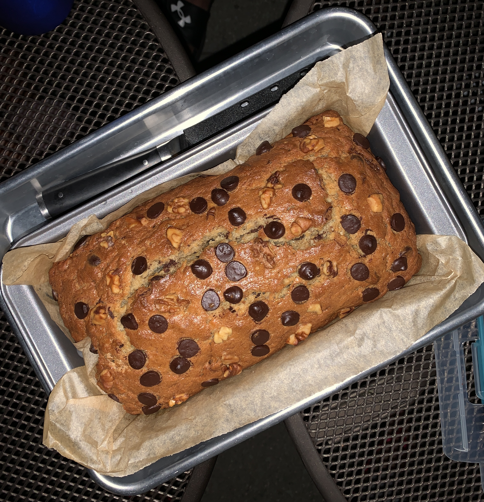
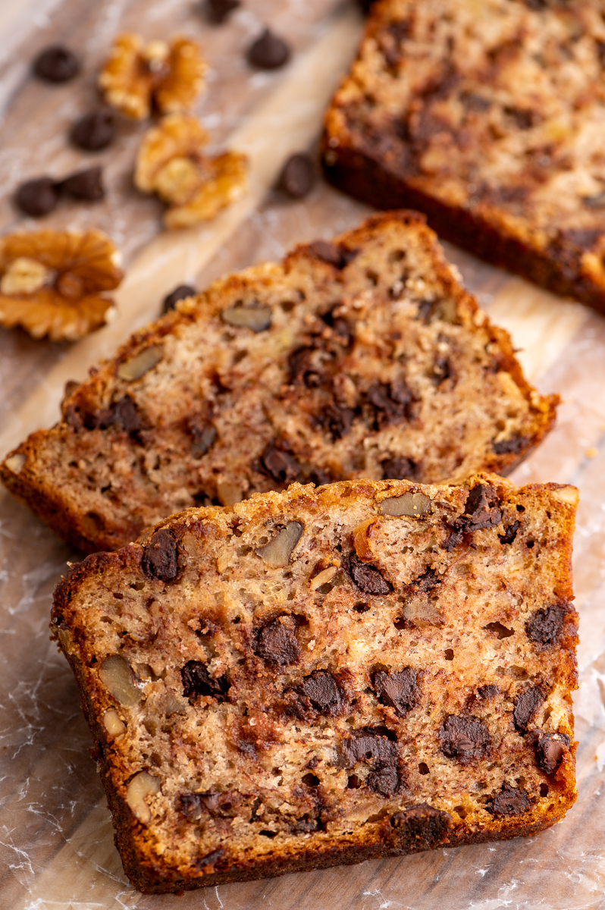
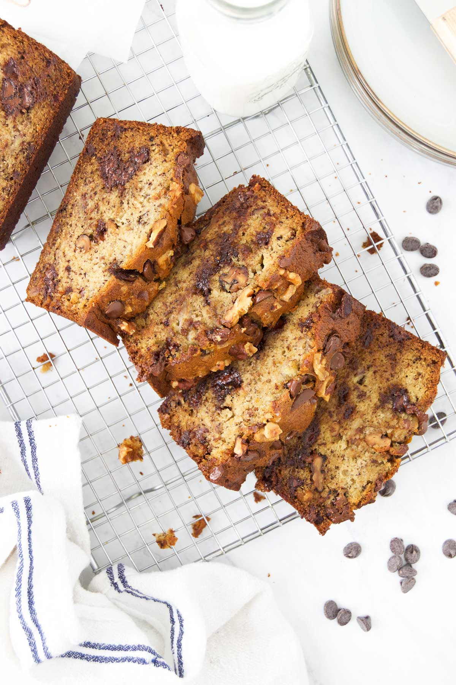
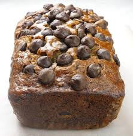
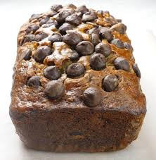
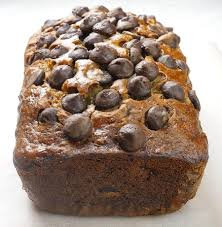
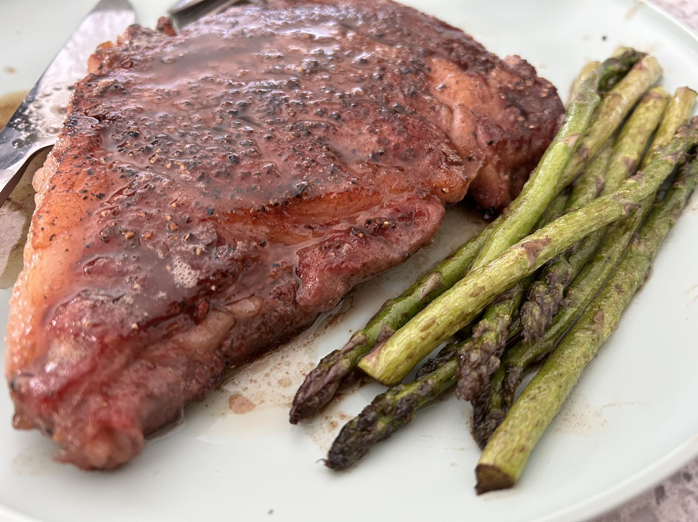
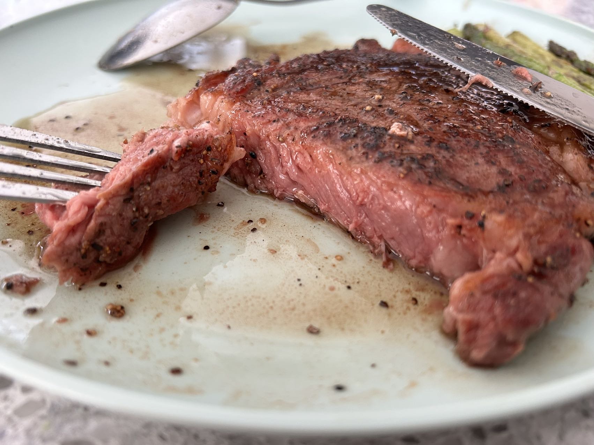
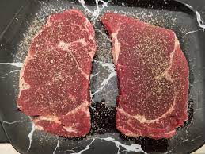
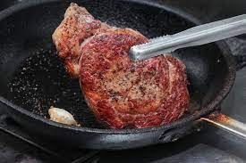

Recipe page
Double Chocolate Cookies
Origin: American Source:Chocolate Chip Banana Bread Recipe (source: Delish) Category: Dessert This is a tried-and-tested recipe that I have used numerous times for making the perfect chocolate chip banana bread! Not only does it help utilize the bananas that have slowly overripened at the back of the fridge, it ends up creating an incredibly delicious, and relatively healthy, dessert.
Recipe Ingredients
- Cooking spray
- 2 cups (240 g) all-purpose flour
- 1 tsp. baking soda
- 1/2 tsp. kosher salt
- 1 large egg plus 1 egg yolk
- 1 cup (200 g) granulated sugar
- 1/2 cup (1 stick) unsalted butter, melted
- 1/4 cup sour cream
- 1 tsp. pure vanilla extract
- 3 ripe bananas, mashed
- 1/2 cup chopped toasted walnuts
- 1/2 cup semisweet chocolate chips
Recipe Steps
- Preheat the oven to 350º. Line a 9"-by-5" loaf pan with parchment and grease with cooking spray.
- In a medium bowl, whisk flour, baking soda, and salt.
- In a large bowl, mix egg, egg yolk, granulated sugar, butter, sour cream, and vanilla. Add bananas and stir until combined. Gradually add dry ingredients to banana mixture until just combined.
- Fold in walnuts and chocolate chips and transfer to prepared pan.
- Bake bread until a tester inserted into the center comes out clean, about 1 hour. Let cool 10 minutes in pan, then invert onto a wire rack and let cool completely.
Additional Food images


 


Steak
Origin: American Source: (Prefer own recipe.) Category: Meat This is only meal I can cook, but I cook it well.
Recipe Ingredients
- Beef steak
- Sea salt
- Black pepper
- Butter
- Garlic
- Olive oil
- Rosemary
Recipe Steps
- Use kitchen paper to wipe away the blood from the surface of the beef, and evenly apply sea salt and black pepper on the beef surface for marination.
- Pour olive oil into a pan and heat it on high heat. After the oil is hot, add the steak and sear each side for 1 minute to 1 minute and 15 seconds to achieve the Maillard reaction.
- Add butter to the pan and reduce the heat to low. Use a spoon to drizzle the melted butter over the surface of the steak. Add garlic, rosemary, and other vegetables.
- Sear each side of the steak for an additional 40 seconds and then remove from the pan. Add hot water to the pan and bring it to a boil to reduce the sauce.
- Pour the sauce over the surface of the steak.
Additional Food images



Coca-Cola Chicken Wings
Origin: China Source: Family Recipe Category: Main Dish
I learnt how to cook Coca-Cola chicken wings from my mother, and I've since tweaked her recipe to better suit my family's palate, making it less sweet. While the cooking process remains straightforward, the result is incredibly flavorful, and once you've tried it, you'll understand its delicious appeal!
Recipe Ingredients
- Chicken wings
- Scallions
- Ginger slices
- Cooking wine
- Dark soy sauce
- A can of coke
Recipe Steps
- Wash and place chicken wings in a bowl
- Add scallions, ginger slices, cooking wine, dark soy sauce and salt to the washed chicken wings, and mix them well
- Cover the bowl with plastic wrap and marinate the chicken wings for 1 hour
- Put the right amount of oil in the pot, and put the marinated chicken wings into the pot and fry it until golden brown on both sides
- After fry the chicken wings until golden brown on both sides, then pour a can of coke into the pan and bring to a boil
- Continue to cook for an additional 2-3 minutes until the glaze has thickened and coats the wings nicely
- Transfer the Coca-Cola glazed chicken wings to a serving platter
Additional Food images